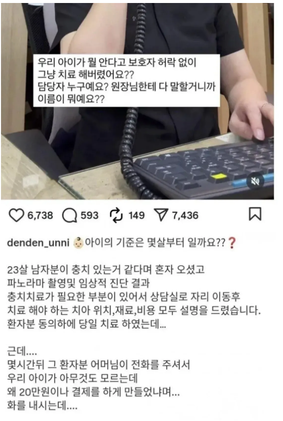

하이모 사장님이구만
저 아저씬 저런취급으로 30년을 살았단거내..
20대초반이 그런 케이스가 많다고??? 말세네 ㅋㅋㅋ
군대 부모들 민원지랄났던거 생각해보셈 ㅋㅋ
모발이식 의사임?
충치 치료가 20만원이나 함? 몰랐네
그리고 겪어봐서알겠지만 치과 과잉치료 많이함
치과는 치료보고 최소 2군데는 돌아보고 치료함.
어디선 충치로 이 갈아내고 새로해야된다고 하는대, 다른곳 가보면 이정도면 간단한 치료만하면된다고 하는곳도 있어서
ㅇㅇ괜히 치과 한 번 가면 텅장된다는게 아니지
레진 다시 하고 하면 우습게 넘음
충치로 이가 구멍나서 레진만 해도 그정도 나올텐데?
레진이 색이 치아와 유사한데 의료보험 대상이 아니라 비싸서 그럴거임
의료보험 되는건 싸고 안 이쁨
어떤 재료를 썼는지, 어느 부윈지 모르는데 단순히 충치 치료가 20만원이냐 하냐고 말 할 순 없지
앞 부분이면 티가 나기 때문에 비싸고 좋은 재료를 추천하기 때문이니깐
만약 저렴한 제품 첨부터 권했다가 시술 끝나고 환자가 항의하면 그건 그거대로 또 ㅈㄹ 맞지 않을까
요즘 같이 정보를 얻기 쉬운 때는 급한 치료가 아니면 환자도 시간을 갖고 알아보고 결정해야지
그것 보다는 치료 내용이 천차만별이더라... 분명 동일한 치아상태인데.. 치료 내용이 전부 달라.. 특히 아파트주변과 구도심은 가격차이가 많이남.. 최소한 지역을 바꿔가며 3군대는 검진받아봐야함.... 치과는 카카오맵 참고 많이하는게 좋아..
검진 꼼꼼하고 의사가 치료내용 직접 설명해주는 곳들 있어 그런 곳들이 꼭 필요한 치료만 하더라..
광고 많은 치과는 그만큼 과잉진료를 해야되는 곳임.. 광고도 없는데 사람이 넘치는 곳은 그만큼 잘한다는 곳임.
어렸을때 과잉진료받고 쌩이빨 신경치료까지 당한 경험이 있음... 수십년이 지났는데 아직도 화가난다.
ㅇㅇ 그것도 맞음
치과 뿐만 아니라 정형외과도 잘 하는 곳 여러 군데 다녀봐야 함
돌팔이 졸 많아
이빨 사이가 썩으면 치과입장에선 2배이벤트임
치실 잘하자
내가 그거 때문에 고생중.... 치실 써야란다 진짜
나 충치치료할 때 충치하나당 7~8만원 했음
아들 새끼도 병신이네 나이 쳐먹고 뭐하는 짓이냐
아들이 왜?
부모가 저러는데 말리지 못하는 게 병신같긴 함. 근데 그 성품도 부모가 만든 거겠지
엄카로 긁어서 저지랄난게 아닌가 싶음
20만원 견적? 엄마돈이니 그냥 긁음
-> 엄마 개빡침. 애꿎은 치과의사한테 개지랄
레진2개이거나 세라믹이면 가능한 범주의 금액 아닌가..
말이되는 금액이냐 아니냐를 떠나서
엄마는 그냥 진료 정도로 생각하고 카드 쥐어보내줬는데
아들놈은 냅다 말도없이 치료까지 달려버려서 그런게 아닌가 싶음
의사야 다큰 성인이 왔는데 당사자한테 설명하고 필요한 치료 한거겠지
금치산자인가보네
요즘 과잉진료하는 치과새끼들이 많아서 그렇긴함ㅋㅋ
내친척동생도 19살밖에 안됬는데 잇몸에 염증생겼다고 바로 영구치 2개 빼버려서 임플란트 해야하더라ㅋㅋ 조금만썩어도 다 갈아버리고 크라운씌우라고하고 이해는감
염증을 시발 발치해버리는건 ㄷㄷ
우리동네 치과는 '여기 충치가 좀 있긴 한데 진행은 멈췄으니 양치질 잘해라' 하던데 얼마나 양심적인지 감도 안옴
; 19살이 뭘 했길레 잇몸 염증이레.. 목도 부었음?
와 시발 좆같다 그거 임플란트하면 잇몸 퇴축되는데 19살부터 임플란트면 미친
개미친새끼네.
잇몸에 염증생길젓도면 풍치마냥 신경 걍 조져버린거 같긴한데..
만약 그렇다면 그걸 신경치료해서 염증빼내는게 좋긴한데 (최악은 잇몸 째기 ^^..)
신경치료 하면 돈도안나오고 신경관 다 찾는 수고는 더욱 힘든데 임플란트는 가격도 싸졌도 신경치료 대비 '딸깍' 수준이니 해버린거아닐까싶음..
임플란트 식재 싫으면 재신경치료 가능한곳이나 이빨 뺀뒤 다시넣는(!) 치과 거기 찾아서가야함
괜히 치과는 두세군데 다녀보라는게 아님
잇몸염증치료 갔더니 의사놈은 쓱 보고 염증 없는데요 하고 가고 어디 실장이랍시고 와서는 잇몸 스케일링 코스 15만원짜리 추천하더라
다른데 가니까 치료해주고 소염제 받음
진짜 애새끼를 개병신새끼로 키우는구만
부모한테 아동학대 초식 못갈기냐
저 청년이 쓴 돈이 부모의 카드? 일 가능성이 높을거 같다... 나가는 돈이 빠듯한데 아들이 20만원을 결제해서?? 혹시라도 저 청년이 번돈으로 20만을 결제했다면 부모가 저 지랄하진 않았을듯...
세상에 머저리들이 너무 많다
자신의 아이를 영원한 병신으로 만드는 어머니네
20대 초반은 하도 그런이야기 많이 들어서 그런갑다 하는데
60대 아저씨 모발이식 하고싶대서 했더니
와이프가 왜 가족 허락도 없이 맘대로 수술했냐고 함 ㅋㅋㅋ
그걸로 고소하네 마네 난리도 아니엇다